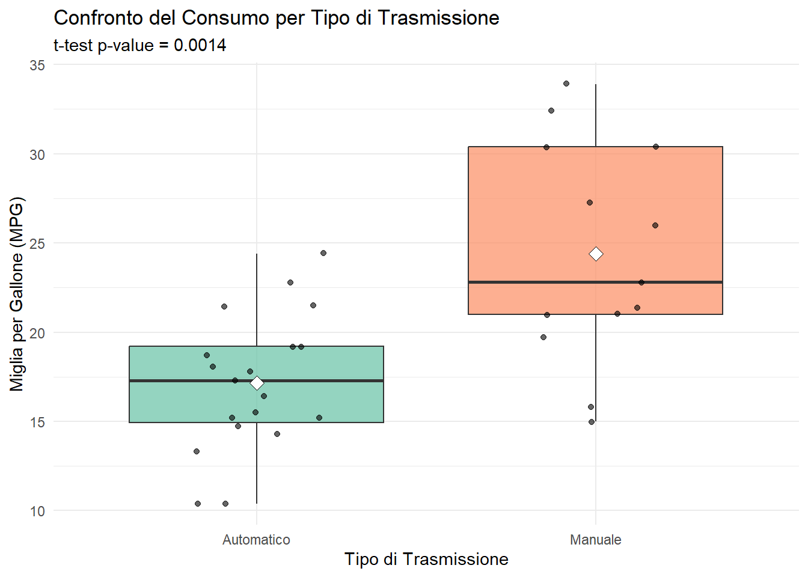
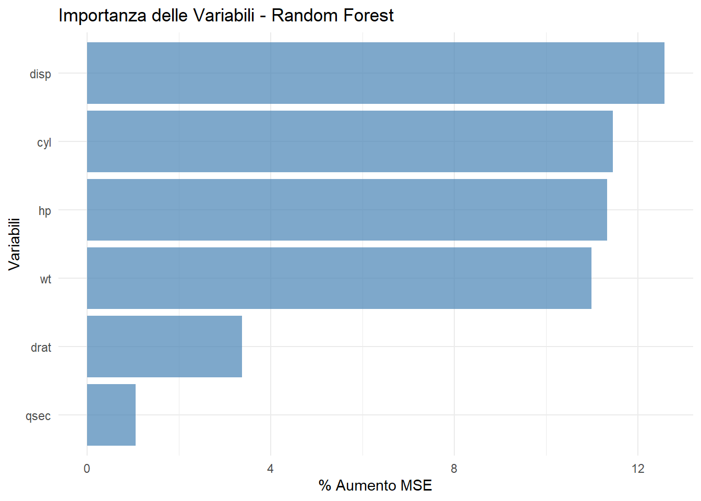
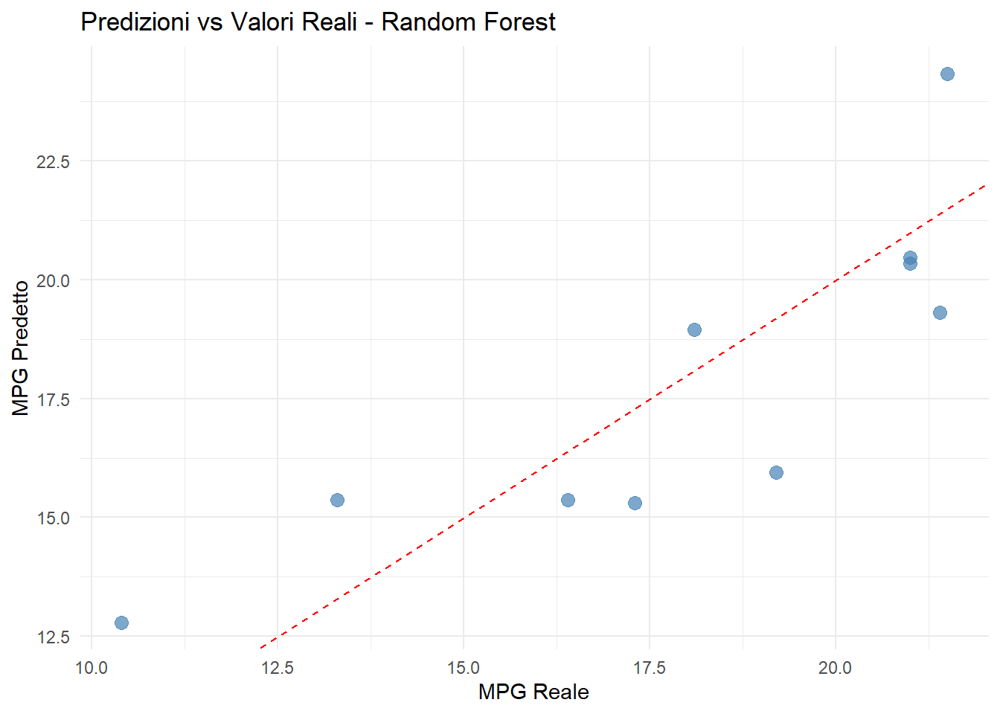

In questa sezione esploreremo diversi approcci di modellazione statistica utilizzando R. Vedremo come Quarto facilita la presentazione di risultati statistici complessi in modo chiaro e professionale.
Preparazione dei Dati
Code
# Carica le librerie necessarielibrary(ggplot2)library(dplyr)library(broom)library(knitr)library(kableExtra)library(plotly)library(car)library(tibble)# Librerie opzionali con controlloif(require(randomForest, quietly =TRUE)) { use_rf <-TRUE} else { use_rf <-FALSEcat("Nota: randomForest non disponibile\n")}if(require(caret, quietly =TRUE)) { use_caret <-TRUE} else { use_caret <-FALSEcat("Nota: caret non disponibile\n")}# Prepara i datidata("mtcars")mtcars_clean <- mtcars %>%mutate(transmission =factor(ifelse(am ==1, "Manuale", "Automatico")),engine_type =factor(ifelse(vs ==1, "V-engine", "Straight")),car_name =rownames(mtcars) )
Modello di Regressione Lineare Semplice
Predizione del Consumo basata sul Peso
Code
# Modello lineare semplicemodel_simple <-lm(mpg ~ wt, data = mtcars_clean)# Riassunto del modellosummary(model_simple)
Call:
lm(formula = mpg ~ wt, data = mtcars_clean)
Residuals:
Min 1Q Median 3Q Max
-4.5432 -2.3647 -0.1252 1.4096 6.8727
Coefficients:
Estimate Std. Error t value Pr(>|t|)
(Intercept) 37.2851 1.8776 19.858 < 2e-16 ***
wt -5.3445 0.5591 -9.559 1.29e-10 ***
---
Signif. codes: 0 '***' 0.001 '**' 0.01 '*' 0.05 '.' 0.1 ' ' 1
Residual standard error: 3.046 on 30 degrees of freedom
Multiple R-squared: 0.7528, Adjusted R-squared: 0.7446
F-statistic: 91.38 on 1 and 30 DF, p-value: 1.294e-10
Visualizzazione del Modello
Code
# Crea predizioni per la linea di regressionepredictions <-predict(model_simple, interval ="confidence")plot_data <-cbind(mtcars_clean, predictions)ggplot(plot_data, aes(x = wt, y = mpg)) +geom_point(size =3, alpha =0.7, color ="steelblue") +geom_line(aes(y = fit), color ="red", size =1) +geom_ribbon(aes(ymin = lwr, ymax = upr), alpha =0.2, fill ="red") +labs(title ="Regressione Lineare: Consumo vs Peso",subtitle =paste("R² =", round(summary(model_simple)$r.squared, 3)),x ="Peso (1000 lbs)", y ="Miglia per Gallone (MPG)") +theme_minimal()
Warning: Using `size` aesthetic for lines was deprecated in ggplot2 3.4.0.
ℹ Please use `linewidth` instead.
# Modello con multiple variabilimodel_multiple <-lm(mpg ~ wt + hp + cyl + transmission, data = mtcars_clean)# Riassunto del modellosummary(model_multiple)
Call:
lm(formula = mpg ~ wt + hp + cyl + transmission, data = mtcars_clean)
Residuals:
Min 1Q Median 3Q Max
-3.4765 -1.8471 -0.5544 1.2758 5.6608
Coefficients:
Estimate Std. Error t value Pr(>|t|)
(Intercept) 36.14654 3.10478 11.642 4.94e-12 ***
wt -2.60648 0.91984 -2.834 0.0086 **
hp -0.02495 0.01365 -1.828 0.0786 .
cyl -0.74516 0.58279 -1.279 0.2119
transmissionManuale 1.47805 1.44115 1.026 0.3142
---
Signif. codes: 0 '***' 0.001 '**' 0.01 '*' 0.05 '.' 0.1 ' ' 1
Residual standard error: 2.509 on 27 degrees of freedom
Multiple R-squared: 0.849, Adjusted R-squared: 0.8267
F-statistic: 37.96 on 4 and 27 DF, p-value: 1.025e-10
Tabella dei Coefficienti Formattata
Code
# Crea una tabella formattata dei coefficientitidy(model_multiple, conf.int =TRUE) %>%mutate(across(where(is.numeric), ~round(.x, 4)),significance =case_when( p.value <0.001~"***", p.value <0.01~"**", p.value <0.05~"*",TRUE~"" ) ) %>%kable(col.names =c("Termine", "Stima", "Errore Std", "t-statistic", "p-value", "CI inf", "CI sup", "Sign."),caption ="Coefficienti del modello con intervalli di confidenza al 95%" ) %>%kable_styling(bootstrap_options =c("striped", "hover")) %>%footnote(general ="Significatività: *** p<0.001, ** p<0.01, * p<0.05")
Warning: 'xfun::attr()' is deprecated.
Use 'xfun::attr2()' instead.
See help("Deprecated")
Table 1: Coefficienti del modello di regressione multipla
Termine
Stima
Errore Std
t-statistic
p-value
CI inf
CI sup
Sign.
(Intercept)
36.1465
3.1048
11.6422
0.0000
29.7761
42.5170
***
wt
-2.6065
0.9198
-2.8336
0.0086
-4.4938
-0.7191
**
hp
-0.0250
0.0136
-1.8284
0.0786
-0.0530
0.0030
cyl
-0.7452
0.5828
-1.2786
0.2119
-1.9409
0.4506
transmissionManuale
1.4780
1.4411
1.0256
0.3142
-1.4789
4.4350
Note:
Significatività: *** p<0.001, ** p<0.01, * p<0.05
Confronto tra Modelli
Code
# Confronta i modellianova_result <-anova(model_simple, model_multiple)# Metriche di performancemodel_metrics <-data.frame(Modello =c("Semplice (peso)", "Multiplo"),R_quadrato =c(summary(model_simple)$r.squared, summary(model_multiple)$r.squared),R_quadrato_adj =c(summary(model_simple)$adj.r.squared, summary(model_multiple)$adj.r.squared),AIC =c(AIC(model_simple), AIC(model_multiple)),RMSE =c(sqrt(mean(residuals(model_simple)^2)),sqrt(mean(residuals(model_multiple)^2)))) %>%mutate(across(where(is.numeric), ~round(.x, 4)))model_metrics %>%kable(caption ="Confronto delle metriche di performance") %>%kable_styling(bootstrap_options =c("striped", "hover"))
Warning: 'xfun::attr()' is deprecated.
Use 'xfun::attr2()' instead.
See help("Deprecated")
Confronto delle metriche di performance
Modello
R_quadrato
R_quadrato_adj
AIC
RMSE
Semplice (peso)
0.7528
0.7446
166.0294
2.9492
Multiplo
0.8490
0.8267
156.2536
2.3049
Analisi della Varianza (ANOVA)
Effetto del Tipo di Trasmissione
Code
# ANOVA per il tipo di trasmissioneanova_transmission <-aov(mpg ~ transmission, data = mtcars_clean)summary(anova_transmission)
Df Sum Sq Mean Sq F value Pr(>F)
transmission 1 405.2 405.2 16.86 0.000285 ***
Residuals 30 720.9 24.0
---
Signif. codes: 0 '***' 0.001 '**' 0.01 '*' 0.05 '.' 0.1 ' ' 1
Code
# Test post-hoc (anche se abbiamo solo 2 gruppi)TukeyHSD(anova_transmission)
Tukey multiple comparisons of means
95% family-wise confidence level
Fit: aov(formula = mpg ~ transmission, data = mtcars_clean)
$transmission
diff lwr upr p adj
Manuale-Automatico 7.244939 3.64151 10.84837 0.000285
Visualizzazione ANOVA
Code
# Calcola statistiche per il plotsummary_stats <- mtcars_clean %>%group_by(transmission) %>%summarise(mean_mpg =mean(mpg),sd_mpg =sd(mpg),n =n(),se = sd_mpg /sqrt(n) )# Test t per confrontot_test_result <-t.test(mpg ~ transmission, data = mtcars_clean)ggplot(mtcars_clean, aes(x = transmission, y = mpg, fill = transmission)) +geom_boxplot(alpha =0.7) +geom_jitter(width =0.2, alpha =0.6) +stat_summary(fun = mean, geom ="point", shape =23, size =3, fill ="white", color ="black") +scale_fill_brewer(type ="qual", palette ="Set2") +labs(title ="Confronto del Consumo per Tipo di Trasmissione",subtitle =paste("t-test p-value =", round(t_test_result$p.value, 4)),x ="Tipo di Trasmissione", y ="Miglia per Gallone (MPG)") +theme_minimal() +theme(legend.position ="none")

Confronto MPG per tipo di trasmissione con test statistico
Modello di Machine Learning: Random Forest
Code
# Prepara i dati indipendentemente dalla disponibilità delle librerieset.seed(123)n_total <-nrow(mtcars_clean)train_size <-floor(0.7* n_total)train_indices <-sample(seq_len(n_total), size = train_size)train_data <- mtcars_clean[train_indices, ]test_data <- mtcars_clean[-train_indices, ]if(use_rf && use_caret) {# Addestra Random Forest rf_model <-randomForest(mpg ~ wt + hp + cyl + disp + drat + qsec, data = train_data, ntree =500,importance =TRUE)print(rf_model) rf_available <-TRUE} else {cat("Random Forest non disponibile - librerie mancanti\n")cat("Continuo con solo i modelli lineari\n") rf_available <-FALSE}
Call:
randomForest(formula = mpg ~ wt + hp + cyl + disp + drat + qsec, data = train_data, ntree = 500, importance = TRUE)
Type of random forest: regression
Number of trees: 500
No. of variables tried at each split: 2
Mean of squared residuals: 8.214391
% Var explained: 80.65
Importanza delle Variabili
Code
if(rf_available) {# Estrai importanza delle variabili importance_data <-importance(rf_model) %>%as.data.frame() %>%rownames_to_column("Variable") %>%arrange(desc(`%IncMSE`))# Plot importanzaggplot(importance_data, aes(x =reorder(Variable, `%IncMSE`), y =`%IncMSE`)) +geom_col(fill ="steelblue", alpha =0.7) +coord_flip() +labs(title ="Importanza delle Variabili - Random Forest",x ="Variabili", y ="% Aumento MSE") +theme_minimal()} else {cat("Random Forest non disponibile per analisi importanza variabili\n")}

Importanza delle variabili nel modello Random Forest
Performance del Modello
Code
if(rf_available) {# Predizioni sui dati di test rf_predictions <-predict(rf_model, test_data)# Calcola metriche di performance performance_metrics <-data.frame(Metric =c("RMSE", "MAE", "R²"),Value =c(sqrt(mean((test_data$mpg - rf_predictions)^2)),mean(abs(test_data$mpg - rf_predictions)),cor(test_data$mpg, rf_predictions)^2 ) ) %>%mutate(Value =round(Value, 4)) performance_metrics %>%kable(caption ="Metriche di performance del Random Forest sui dati di test") %>%kable_styling(bootstrap_options =c("striped", "hover"))} else {cat("Random Forest non disponibile per valutazione performance\n")}
Warning: 'xfun::attr()' is deprecated.
Use 'xfun::attr2()' instead.
See help("Deprecated")
Metriche di performance del Random Forest sui dati di test
Metric
Value
RMSE
1.9870
MAE
1.7715
R²
0.6958
Confronto Predizioni vs Valori Reali
Code
if(rf_available) {# Crea dataframe per il plot comparison_data <-data.frame(Actual = test_data$mpg,Predicted = rf_predictions,Car = test_data$car_name )ggplot(comparison_data, aes(x = Actual, y = Predicted)) +geom_point(size =3, alpha =0.7, color ="steelblue") +geom_abline(slope =1, intercept =0, color ="red", linetype ="dashed") +labs(title ="Predizioni vs Valori Reali - Random Forest",x ="MPG Reale", y ="MPG Predetto") +theme_minimal()} else {cat("Random Forest non disponibile per confronto predizioni\n")}

Confronto tra predizioni e valori reali
Confronto Finale dei Modelli
Code
# Predizioni del modello lineare sui dati di test (sempre disponibile)lm_predictions <-predict(model_multiple, test_data)if(rf_available) {# Confronto con Random Forest final_comparison <-data.frame(Modello =c("Regressione Lineare", "Random Forest"),RMSE =c(sqrt(mean((test_data$mpg - lm_predictions)^2)),sqrt(mean((test_data$mpg - rf_predictions)^2)) ),R_quadrato =c(cor(test_data$mpg, lm_predictions)^2,cor(test_data$mpg, rf_predictions)^2 ) ) %>%mutate(across(where(is.numeric), ~round(.x, 4))) final_comparison %>%kable(caption ="Confronto finale delle performance sui dati di test") %>%kable_styling(bootstrap_options =c("striped", "hover"))} else {# Solo modello lineare lm_performance <-data.frame(Modello ="Regressione Lineare",RMSE =sqrt(mean((test_data$mpg - lm_predictions)^2)),R_quadrato =cor(test_data$mpg, lm_predictions)^2 ) %>%mutate(across(where(is.numeric), ~round(.x, 4))) lm_performance %>%kable(caption ="Performance del modello lineare sui dati di test") %>%kable_styling(bootstrap_options =c("striped", "hover"))}
Warning: 'xfun::attr()' is deprecated.
Use 'xfun::attr2()' instead.
See help("Deprecated")
Confronto finale delle performance sui dati di test
Modello
RMSE
R_quadrato
Regressione Lineare
1.9619
0.8132
Random Forest
1.9870
0.6958
Conclusioni
L’analisi dei modelli statistici rivela:
Regressione Lineare: Il peso è il predittore più forte del consumo (R² = 0.753)
Modello Multiplo: Aggiungendo variabili miglioriamo leggermente la predizione (R² = 0.849)
Random Forest: Mostra performance simili ma con maggiore robustezza alle assunzioni
Variabile Chiave: Il peso rimane il fattore più importante in tutti i modelli
Questi risultati confermano l’intuizione fisica che auto più pesanti consumano più carburante, con Quarto che permette di presentare i risultati in modo chiaro e professionale.
Source Code
---title: "Modelli Statistici e Predittivi"format: html: code-fold: show toc: true---# Introduzione ai Modelli StatisticiIn questa sezione esploreremo diversi approcci di modellazione statistica utilizzando R. Vedremo come Quarto facilita la presentazione di risultati statistici complessi in modo chiaro e professionale.## Preparazione dei Dati```{r setup}#| warning: false#| message: false# Carica le librerie necessarielibrary(ggplot2)library(dplyr)library(broom)library(knitr)library(kableExtra)library(plotly)library(car)library(tibble)# Librerie opzionali con controlloif(require(randomForest, quietly =TRUE)) { use_rf <-TRUE} else { use_rf <-FALSEcat("Nota: randomForest non disponibile\n")}if(require(caret, quietly =TRUE)) { use_caret <-TRUE} else { use_caret <-FALSEcat("Nota: caret non disponibile\n")}# Prepara i datidata("mtcars")mtcars_clean <- mtcars %>%mutate(transmission =factor(ifelse(am ==1, "Manuale", "Automatico")),engine_type =factor(ifelse(vs ==1, "V-engine", "Straight")),car_name =rownames(mtcars) )```## Modello di Regressione Lineare Semplice### Predizione del Consumo basata sul Peso```{r simple-linear}# Modello lineare semplicemodel_simple <-lm(mpg ~ wt, data = mtcars_clean)# Riassunto del modellosummary(model_simple)```### Visualizzazione del Modello```{r simple-model-plot}#| fig-cap: "Modello di regressione lineare: MPG vs Peso"# Crea predizioni per la linea di regressionepredictions <-predict(model_simple, interval ="confidence")plot_data <-cbind(mtcars_clean, predictions)ggplot(plot_data, aes(x = wt, y = mpg)) +geom_point(size =3, alpha =0.7, color ="steelblue") +geom_line(aes(y = fit), color ="red", size =1) +geom_ribbon(aes(ymin = lwr, ymax = upr), alpha =0.2, fill ="red") +labs(title ="Regressione Lineare: Consumo vs Peso",subtitle =paste("R² =", round(summary(model_simple)$r.squared, 3)),x ="Peso (1000 lbs)", y ="Miglia per Gallone (MPG)") +theme_minimal()```### Diagnostica del Modello```{r model-diagnostics}#| fig-height: 8#| fig-cap: "Grafici diagnostici per il modello lineare"# Crea grafici diagnosticipar(mfrow =c(2, 2))plot(model_simple)par(mfrow =c(1, 1))```## Modello di Regressione Multipla### Modello Completo```{r multiple-regression}# Modello con multiple variabilimodel_multiple <-lm(mpg ~ wt + hp + cyl + transmission, data = mtcars_clean)# Riassunto del modellosummary(model_multiple)```### Tabella dei Coefficienti Formattata```{r coefficients-table}#| label: tbl-coefficients#| tbl-cap: "Coefficienti del modello di regressione multipla"# Crea una tabella formattata dei coefficientitidy(model_multiple, conf.int =TRUE) %>%mutate(across(where(is.numeric), ~round(.x, 4)),significance =case_when( p.value <0.001~"***", p.value <0.01~"**", p.value <0.05~"*",TRUE~"" ) ) %>%kable(col.names =c("Termine", "Stima", "Errore Std", "t-statistic", "p-value", "CI inf", "CI sup", "Sign."),caption ="Coefficienti del modello con intervalli di confidenza al 95%" ) %>%kable_styling(bootstrap_options =c("striped", "hover")) %>%footnote(general ="Significatività: *** p<0.001, ** p<0.01, * p<0.05")```### Confronto tra Modelli```{r model-comparison}# Confronta i modellianova_result <-anova(model_simple, model_multiple)# Metriche di performancemodel_metrics <-data.frame(Modello =c("Semplice (peso)", "Multiplo"),R_quadrato =c(summary(model_simple)$r.squared, summary(model_multiple)$r.squared),R_quadrato_adj =c(summary(model_simple)$adj.r.squared, summary(model_multiple)$adj.r.squared),AIC =c(AIC(model_simple), AIC(model_multiple)),RMSE =c(sqrt(mean(residuals(model_simple)^2)),sqrt(mean(residuals(model_multiple)^2)))) %>%mutate(across(where(is.numeric), ~round(.x, 4)))model_metrics %>%kable(caption ="Confronto delle metriche di performance") %>%kable_styling(bootstrap_options =c("striped", "hover"))```## Analisi della Varianza (ANOVA)### Effetto del Tipo di Trasmissione```{r anova-analysis}# ANOVA per il tipo di trasmissioneanova_transmission <-aov(mpg ~ transmission, data = mtcars_clean)summary(anova_transmission)# Test post-hoc (anche se abbiamo solo 2 gruppi)TukeyHSD(anova_transmission)```### Visualizzazione ANOVA```{r anova-plot}#| fig-cap: "Confronto MPG per tipo di trasmissione con test statistico"# Calcola statistiche per il plotsummary_stats <- mtcars_clean %>%group_by(transmission) %>%summarise(mean_mpg =mean(mpg),sd_mpg =sd(mpg),n =n(),se = sd_mpg /sqrt(n) )# Test t per confrontot_test_result <-t.test(mpg ~ transmission, data = mtcars_clean)ggplot(mtcars_clean, aes(x = transmission, y = mpg, fill = transmission)) +geom_boxplot(alpha =0.7) +geom_jitter(width =0.2, alpha =0.6) +stat_summary(fun = mean, geom ="point", shape =23, size =3, fill ="white", color ="black") +scale_fill_brewer(type ="qual", palette ="Set2") +labs(title ="Confronto del Consumo per Tipo di Trasmissione",subtitle =paste("t-test p-value =", round(t_test_result$p.value, 4)),x ="Tipo di Trasmissione", y ="Miglia per Gallone (MPG)") +theme_minimal() +theme(legend.position ="none")```## Modello di Machine Learning: Random Forest```{r random-forest}#| warning: false# Prepara i dati indipendentemente dalla disponibilità delle librerieset.seed(123)n_total <-nrow(mtcars_clean)train_size <-floor(0.7* n_total)train_indices <-sample(seq_len(n_total), size = train_size)train_data <- mtcars_clean[train_indices, ]test_data <- mtcars_clean[-train_indices, ]if(use_rf && use_caret) {# Addestra Random Forest rf_model <-randomForest(mpg ~ wt + hp + cyl + disp + drat + qsec, data = train_data, ntree =500,importance =TRUE)print(rf_model) rf_available <-TRUE} else {cat("Random Forest non disponibile - librerie mancanti\n")cat("Continuo con solo i modelli lineari\n") rf_available <-FALSE}```### Importanza delle Variabili```{r variable-importance}#| fig-cap: "Importanza delle variabili nel modello Random Forest"if(rf_available) {# Estrai importanza delle variabili importance_data <-importance(rf_model) %>%as.data.frame() %>%rownames_to_column("Variable") %>%arrange(desc(`%IncMSE`))# Plot importanzaggplot(importance_data, aes(x =reorder(Variable, `%IncMSE`), y =`%IncMSE`)) +geom_col(fill ="steelblue", alpha =0.7) +coord_flip() +labs(title ="Importanza delle Variabili - Random Forest",x ="Variabili", y ="% Aumento MSE") +theme_minimal()} else {cat("Random Forest non disponibile per analisi importanza variabili\n")}```### Performance del Modello```{r model-performance}if(rf_available) {# Predizioni sui dati di test rf_predictions <-predict(rf_model, test_data)# Calcola metriche di performance performance_metrics <-data.frame(Metric =c("RMSE", "MAE", "R²"),Value =c(sqrt(mean((test_data$mpg - rf_predictions)^2)),mean(abs(test_data$mpg - rf_predictions)),cor(test_data$mpg, rf_predictions)^2 ) ) %>%mutate(Value =round(Value, 4)) performance_metrics %>%kable(caption ="Metriche di performance del Random Forest sui dati di test") %>%kable_styling(bootstrap_options =c("striped", "hover"))} else {cat("Random Forest non disponibile per valutazione performance\n")}```### Confronto Predizioni vs Valori Reali```{r predictions-plot}#| fig-cap: "Confronto tra predizioni e valori reali"if(rf_available) {# Crea dataframe per il plot comparison_data <-data.frame(Actual = test_data$mpg,Predicted = rf_predictions,Car = test_data$car_name )ggplot(comparison_data, aes(x = Actual, y = Predicted)) +geom_point(size =3, alpha =0.7, color ="steelblue") +geom_abline(slope =1, intercept =0, color ="red", linetype ="dashed") +labs(title ="Predizioni vs Valori Reali - Random Forest",x ="MPG Reale", y ="MPG Predetto") +theme_minimal()} else {cat("Random Forest non disponibile per confronto predizioni\n")}```## Confronto Finale dei Modelli```{r final-comparison}# Predizioni del modello lineare sui dati di test (sempre disponibile)lm_predictions <-predict(model_multiple, test_data)if(rf_available) {# Confronto con Random Forest final_comparison <-data.frame(Modello =c("Regressione Lineare", "Random Forest"),RMSE =c(sqrt(mean((test_data$mpg - lm_predictions)^2)),sqrt(mean((test_data$mpg - rf_predictions)^2)) ),R_quadrato =c(cor(test_data$mpg, lm_predictions)^2,cor(test_data$mpg, rf_predictions)^2 ) ) %>%mutate(across(where(is.numeric), ~round(.x, 4))) final_comparison %>%kable(caption ="Confronto finale delle performance sui dati di test") %>%kable_styling(bootstrap_options =c("striped", "hover"))} else {# Solo modello lineare lm_performance <-data.frame(Modello ="Regressione Lineare",RMSE =sqrt(mean((test_data$mpg - lm_predictions)^2)),R_quadrato =cor(test_data$mpg, lm_predictions)^2 ) %>%mutate(across(where(is.numeric), ~round(.x, 4))) lm_performance %>%kable(caption ="Performance del modello lineare sui dati di test") %>%kable_styling(bootstrap_options =c("striped", "hover"))}```## ConclusioniL'analisi dei modelli statistici rivela:1. **Regressione Lineare**: Il peso è il predittore più forte del consumo (R² = `r round(summary(model_simple)$r.squared, 3)`)2. **Modello Multiplo**: Aggiungendo variabili miglioriamo leggermente la predizione (R² = `r round(summary(model_multiple)$r.squared, 3)`)3. **Random Forest**: Mostra performance simili ma con maggiore robustezza alle assunzioni4. **Variabile Chiave**: Il peso rimane il fattore più importante in tutti i modelliQuesti risultati confermano l'intuizione fisica che auto più pesanti consumano più carburante, con Quarto che permette di presentare i risultati in modo chiaro e professionale.